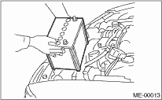

NOTE:
Inspection and adjustment of valve clearance should be performed while engine is cold.
1. Set the vehicle on a lift.
2. Disconnect the ground cable from the battery.

3. Remove the collector cover. (DOHC Turbo model)
4. Remove the air intake duct. 
5. Remove a bolt which secures timing belt cover (RH).
6. Lift the vehicle.
7. Remove the under cover.
8. Loosen the remaining bolts which secure timing belt cover (RH), then remove the timing belt cover.
9. Lower the vehicle.
10. When inspecting #1 and #3 cylinders:
(1) Remove the air cleaner case.
(2) Disconnect the connector of ignition coil.
(3) Remove the ignition coil.
(4) Place a suitable container under the vehicle.
(5) Disconnect the PCV hose from rocker cover (RH).
(6) Remove the bolts, then remove the rocker cover (RH).
11. When inspecting #2 and #4 cylinders:
(1) Disconnect the battery cable, and then remove the battery and battery carrier.

(2) Remove the bolt which holds the engine harness bracket on the body. (DOHC Turbo model)
(3) Remove the secondary air pump.
(4) Disconnect the connector of ignition coil.
(5) Remove the ignition coil.
(6) Place a suitable container under the vehicle.
(7) Disconnect the PCV hose from rocker cover (LH).
(8) Remove the bolts, then remove the rocker cover (LH).
12. Turn the crank pulley clockwise until arrow mark on the camshaft sprocket is set to position shown in the figure.
NOTE:
Turn the crankshaft using socket wrench.
13. Measure the #1 cylinder intake valve and #3 cylinder exhaust valve clearance by using thickness gauge (A).
NOTE:
• Insert a thickness gauge in a direction as horizontal as possible with respect to the valve lifter.
• Lift up the vehicle, and then measure the exhaust valve clearances.
Valve clearance:
Intake
0.20±0.02 mm (0.0079±0.0008 in)
Exhaust
0.35±0.02 mm (0.0138±0.0008 in)
• If the measured value is not within specification, take notes of the value in order to adjust the valve clearance later on.
14. If necessary, adjust the valve clearance.
15. Further turn the crank pulley clockwise.
Using the same procedures described previously, then measure valve clearances again.
(1) Set the arrow mark on cam sprocket to the position shown in the figure, and measure the #2 cylinder exhaust valve and #3 cylinder intake valve clearances.
(2) Set the arrow mark on cam sprocket to the position shown in the figure, and measure the #2 cylinder intake valve and #4 cylinder exhaust valve clearances.
(3) Set the arrow mark on cam sprocket to the position shown in the figure, and measure the #1 cylinder exhaust valve and #4 cylinder intake valve clearances.
16. After inspection, install the related parts in the reverse order of removal.
Tightening torque:
33 N·m (3.4 kgf-m, 25 ft-lb)